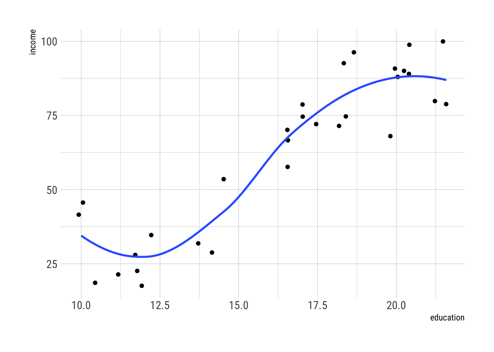
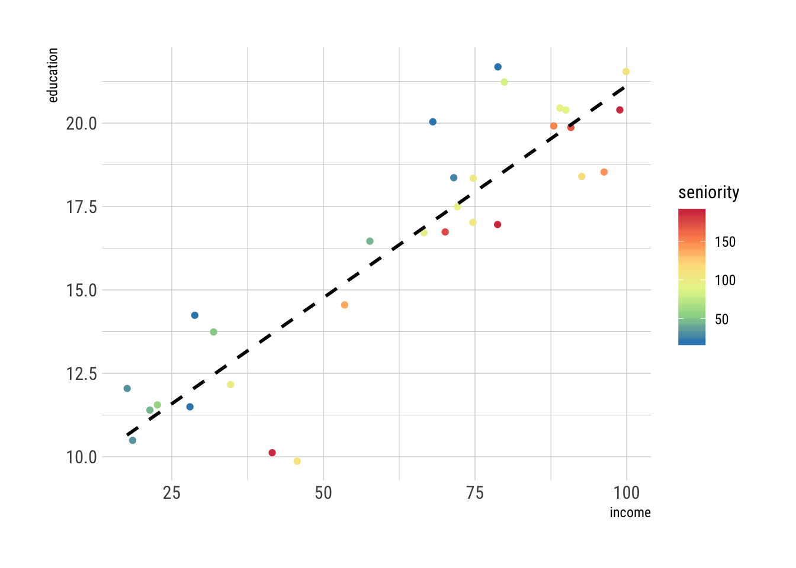
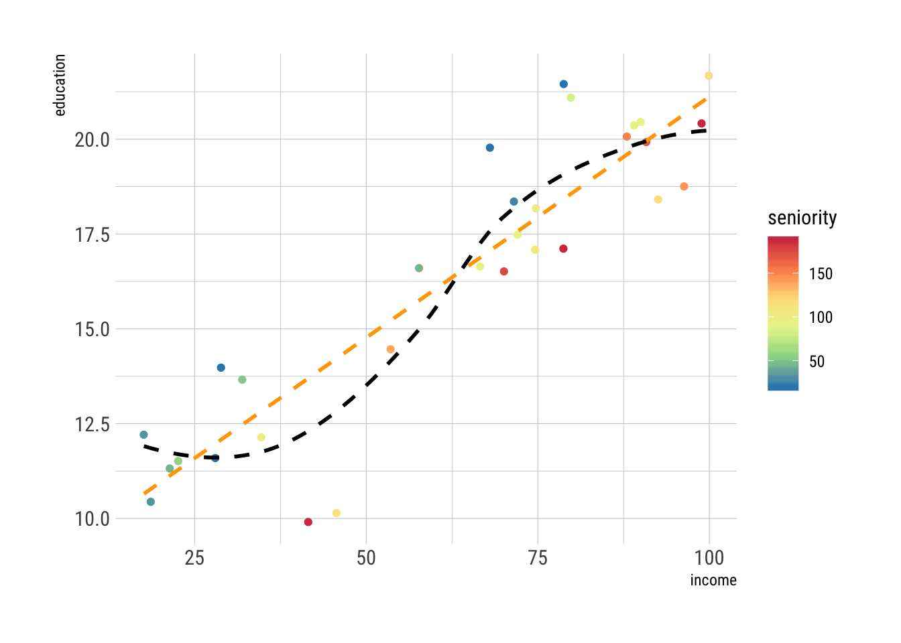
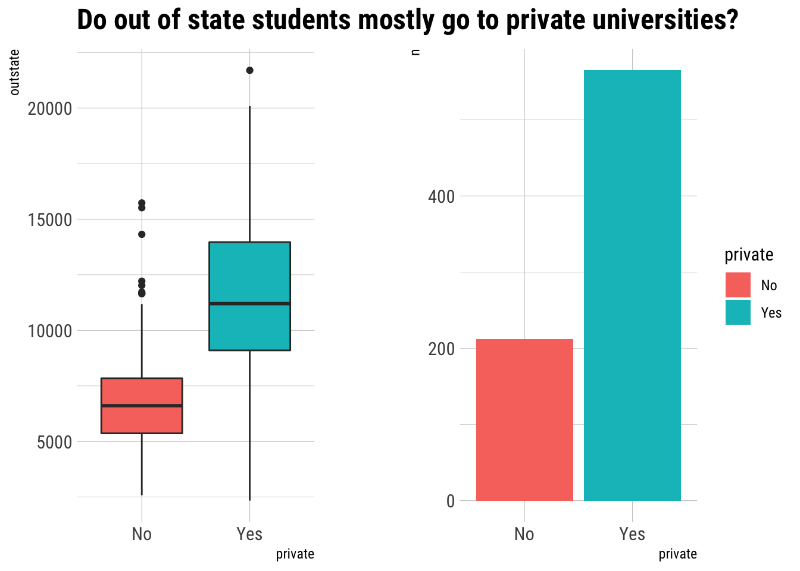
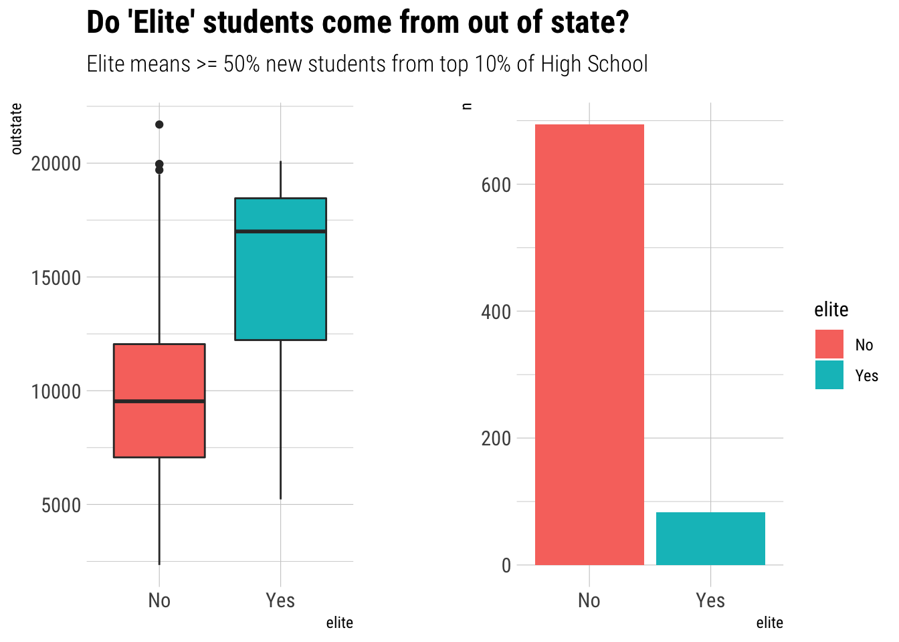
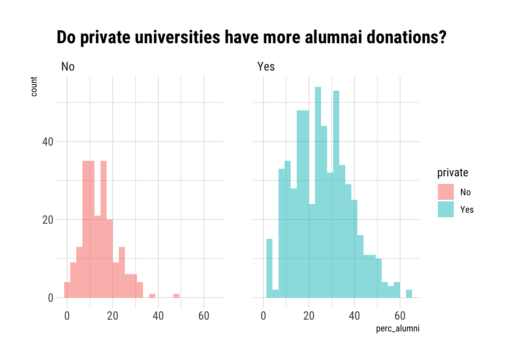
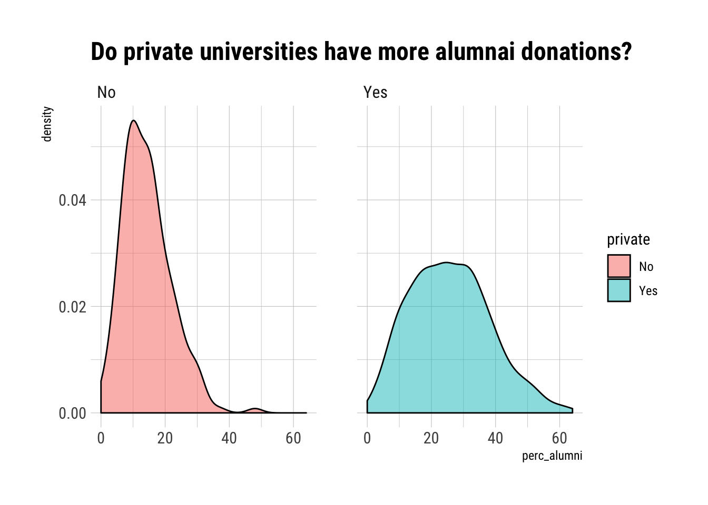

last updated on 2018-05-17
library(tidyverse)## ── [1mAttaching packages[22m ───────────────────────────────────────────────────────────────────── tidyverse 1.2.1.[31m9000[39m ──## [32m✔[39m [34mggplot2[39m 2.2.1.[31m9000[39m [32m✔[39m [34mpurrr [39m 0.2.4
## [32m✔[39m [34mtibble [39m 1.4.2 [32m✔[39m [34mdplyr [39m 0.7.4
## [32m✔[39m [34mtidyr [39m 0.8.0 [32m✔[39m [34mstringr[39m 1.3.1
## [32m✔[39m [34mreadr [39m 1.1.1 [32m✔[39m [34mforcats[39m 0.3.0## ── [1mConflicts[22m ───────────────────────────────────────────────────────────────────────────── tidyverse_conflicts() ──
## [31m✖[39m [34mdplyr[39m::[32mfilter()[39m masks [34mstats[39m::filter()
## [31m✖[39m [34mdplyr[39m::[32mlag()[39m masks [34mstats[39m::lag()
## [31m✖[39m [34mdplyr[39m::[32mvars()[39m masks [34mggplot2[39m::vars()library(hrbrthemes)
library(patchwork)When exploring relationships between variables in data to make predictions there can be a lot of confusing language used to describe input variables and the output variable.
Input variables:
Output variable:
The relationship between the input (\(X=(X_{1},X_{2},\ldots,X_{p})\)) and output (\(Y\)) variable can be denoted as:
\[ Y=f(X) + \epsilon \tag{2.1} \]
| Math | Meaning |
|---|---|
| \(f\) | some fixed but unknown function of \(X_{1},\ldots,X_{p}\)1 |
| \(\epsilon\) | is a random error term, which is independent of \(X\) |
An example from the Income2 data set
Read data and clean names
income <- read_csv("data/Income2.csv") %>% janitor::clean_names()## Warning: Missing column names filled in: 'X1' [1]## Parsed with column specification:
## cols(
## X1 = col_integer(),
## Education = col_double(),
## Seniority = col_double(),
## Income = col_double()
## )Plot and fit a loess line
income %>%
ggplot(aes(x = education, y = income)) +
geom_jitter() +
geom_smooth(method = "loess", se = F) +
theme_ipsum_rc()
The blue line represents the \(f\) that connects the input variable to the output variable, which in general is unknown. The distance between data points and the \(f\) line represent the error terms \(\epsilon\)
Effectively Statistical Learning refers to a set of approaches for estimating \(f\)
Two reasons we would want to estimate \(f\):
In many situations a set of inputs \(\text{X}\) are readily available, but the output \(\text{Y}\) cannot be easily obtained. When error terms average to 0 (which I imagine means that the distance between the data points and the \(f\) fit varry a little but average out to 0) we can predict \(\text{Y}\) using:
\[ \hat{Y}=\hat{f}(X)+\epsilon \tag{2.2} \]
| Math | Meaning |
|---|---|
| \(\hat{f}\) | our estimate for \(f\) (often treated as a black box in the sense that people usually don’t care what form it takes so long as it accurately predicts \(Y\)) |
| \(\hat{Y}\) | the resulting prediction for \(Y\) |
| \(\epsilon\) | difference between predicted values and data |
Accuracy of \(\hat{Y}\) depends on two quantities, i.e., \(\epsilon\) has two underlying dimentions:
Reducible error: the part of the model that can be reduced because a known pattern exists in the data Irreducible error: the part of the model that cannot be reduced because we either have not yet created a method that exists to further reduce error or there is some unknown variable or pattern that we do not yet understand about the relationship between the data and the variables.
Suppose I am interested predicting demand for a particular product in city \(X\) for the coming month. I’ve collected the last 5 years’ data for demand, price, the competitor’s product availability, advertisement expenditure, customer feedback et cetera (whatever variables affect the demand for this product). This data is known as the training set, which includes the outcome or response variable, i.e., “demand” as well as all these related variables known as predictors, features, or inputs.
Based on this training data set, I’ve built a predictive model and use it to predict (or forecast) “demand” for the next month. After one month has passed, I want to check how well my model performed given the actual demand. Predicted values cannot match perfectly with the observed values for all inputs but we can try to see how close we can get.
I’ve computed the differences between the actual demand and my predicted values of demand for all inputs. These differences are known as errors. Now this error can be further split into two parts: reducible and irreducible error.
Assume that some other person has also tried to do the same job and come up with a different model and their errors are less than (or greater than) that of mine. It shows that some part of the errors can be reduced by improving the model. This part is known as reducible error.
But still there is some error left which, for now, cannot be further reduced as it is due to some unknown factor. For example, there might be other variables that impact demand but are unable to be measured or even some unpredictable variable that we just don’t understand yet. The error that cannot be reduced further is known as the irreducible error. Edited from Source
Consider an estimate \(\hat{f}\) and a set of predictors \(X\), which yields the prediction \(\hat{Y}=\hat{f}(X)\). Assume that both \(\hat{f}\) and \(X\) are fixed. Then we can show that
\[ \begin{aligned} E(Y-\hat{Y})^{2} &= E[f(X)+\epsilon \ -\hat{f}(X)]^{2} \\ &=\underbrace{[f(X)- \ \hat{f}(X)]^{2}}_{reducible \ error} \ + \ \underbrace{Var(\epsilon)}_{irreducible \ error} \end{aligned} \tag{2.3} \]
| Math | Meaning |
|---|---|
| \(E(Y-\hat{Y})^{2}\) | the average, or expected value of the squared difference between the predicted and actual value of \(Y\) |
| \(Var(\epsilon)\) | the variance associated with the error term \(\epsilon\) |
Our goal is to predict \(Y\) while minimizing reducable errors as best as practicable
When you need to understand the way that \(Y\) is affected as \(X_{1}, \ldots, X_{p}\) change then you are no longer able to treat \(\hat{f}\) as a black box–because you are specifically interested in the relationship between \(X\) and \(Y\), i.e., how \(Y\) changes as a function of \(X_{1}, \ldots, X_{p}\). When openning the black box to inspect how the model works, we may be trying to answer one of these questions:
Generally when employing a statistical learning model, your question will fall into one or both focus areas: the prediction space, the inference space, or both the predication and inference space.
Depending on whether prediction, inference, or both is the goal there are different methods for estimating \(f\) that may be more or less appropriate.
How do we estimate for \(f\)?
There are many linear and non-linear approaches but many share a set of characteristics that we need to understand.
| Term | Meaning |
|---|---|
| training data | use these observations to train, or teach, our method how to estimate \(f\) |
| parametric | assuming the shape of the functional form of \(f\), e.g., assuming the shape is linear structured |
| non-parametric | not making explicit assumptions about the functional form of \(f\); rather, seeking out an estimate of \(f\) that gets as close to the data points as possible without being too rough or wiggly unstructured |
| fit | using the training data on the model you selected; the degree to which it is successful can be described in the same way you fit a shirt to a body; does the shirt match the true form of \(f\)? You don’t know until you put it on |
| train | when the model is learning from the training data; it is training to either predict an output or to better understand or amplify a hidden feature or relationship of some kind |
| least squares | the most common way to fitting a model (discussed more in CH3) |
| flexible | a way to describe a model as having the ability to fit many different possible functional forms |
| overfitting | when the model follows the errors too closely and produces a fit that too tightly fits the data; like a pair of pants so tight you couldn’t actually put them on or take them off |
| noise | the data that does not aid or isn’t related to \(\hat{f}\) |
| thin-plate spline | this approach does not impose any pre-specified model on \(f\). It instead attempts to produce an estimate for \(f\) that is as close as possible to the observed data, subject to the fit being smooth non-parametric model |
Let \(x_{ij}\) represent the value of the \(j\)th predictor, or input, for observation \(i\) where \(y_{i}\) represents the response variable for the \(i\)th observation:
\[ \begin{aligned} i &= 1,2,\ldots, n \\ j &= 1,2,\ldots, p \\ \{(x_{1},y_{1}), (x_{2},y_{2}),\ldots, (x_{n},y_{n})\} \ where \ x_{1} &= (x_{i1}, x_{i2}, \ldots, x_{ip})^{T} \end{aligned} \tag{p 21} \]
The goal is to apply the statistical learning model to the training data in order to estimate the unknown function \(f\), which is to say: we want to find a function \(\hat{f}\) such that \(Y\approx \hat{f}(X)\) for any observation \((X,Y)\)
income %>%
ggplot(aes(x = income, y = education)) +
geom_jitter(aes(color = seniority)) +
geom_smooth(method = "lm", se = F, color = "black", linetype = 2) +
scale_color_distiller(palette = "Spectral") +
theme_ipsum_rc()
We are making an asumption that \(f\) is linear in the above example. Which means:
\[ f(X)=\beta_{0} \ + \ \beta_{1}X_{1} \ + \ \beta_{2}X_{2} \ + \ \ldots \ + \ \beta_{p}X_{p} \tag{2.4} \]
This is simpler because we no longer need to estimate an arbitrary \(p\)-dimensional function \(f(X)\); rather, we only need estimate the \(p+1\) coefficients \(\beta_{0}, \beta_{1}, \ldots, \beta{p}\)
To train a model, using the linear example above, we need to estimate the parameters \(\beta_{0}, \beta_{1}, \ldots, \beta_{p}\) which means we want to find the values of these parameters such that:
\[ Y \approx \beta_{0} \ + \ \beta_{1}X_{1} \ + \ \beta_{2}X_{2} \ + \ \ldots \ + \ \beta_{p}X_{p} \tag{p 21} \]
This translates to:
\[ income \ \approx \beta_{0} \ + \ \beta_{1} \times \ education \ + \ \beta_{2} \ \times \ seniority \tag{p 22} \]
The linear fit line above (dotted line) is not quite right but it does a reasonable job of capturing the positive relationship between years of education and income as well as the slightly less positive relationship between seniority and income.
Can sometimes fit the data perfectly but can introduce problems like over-fitting, which is a problem because under-fitting and over-fitting both do not produce accurate estimates of the response on new observations that were not part of the original training data set.
Prediction accuracy v model interpretability
Models range in how flexible and restrictive they can be in connection to the range of shapes to estimate \(f\), e.g., linear regression is a relatively inflexible approach since it only generates linear shapes to estimate \(f\). Other models can generate many possible shapes for \(f\), which begs the question: why would we ever choose to use a more restrictive method instead of a very flexible approach? If our goal is inference then restrictive models can help us better understand the relationship between \(Y\) and \(X_{1},X_{2},\ldots,X_{p}\). Very flexible models can lead to such complicated estimates of \(f\) that it becomes difficult to understand how an individual predictor is associated with the response.
Supervised v unsupervised learning
| Term | Meaning |
|---|---|
| Supervised | a model that for each observation of the predictor measurement(s) there is an associated response measurement |
| Unsupervised | a model that does not have a response variable and does not use one; i.e., when you lack a response variable to supervise the analysis |
Regression v classification
| Term | Meaning |
|---|---|
| quantitative | numerical values discrete |
| qualitative | values in one of \(K\) different classes categorical |
| regression | generally problems with a quantitative response |
| classification | generally problems with a qualitative response |
The regression / classification distinction is not always so crisp, e.g., logistic regression produces a qualitative (two-class or binary) reponse. As such, it is often used as a classification method but what it is really doing is estimating class probabilities, which is why it is thought of as a regression method as well. Some methods do both: \(K\)-nearest neighbors and boosting can be used in both cases.
Assessing model accuracy
There is no one model that is best and therefore it is important to know how many models work in order to select the best model for given data.
Measuring the quality of fit
In order to measure how well a model’s predicitons perform you need to quantify the extent to which the predicted response for an observation matched the true response for that observation. For regression, a common approach is to use the mean squared error
\[ MSE=\frac{1}{n}\sum^{n}_{i=1}(y_{i} \ - \ \hat{f}(x_{i}))^{2} \tag{2.5} \]
| Math | Meaning |
|---|---|
| \(\hat{f}(x_{i})\) | the prediction that \(\hat{f}\) gives for the \(i\)th observation |
| \(MSE\) | will be small if the predicted responses are very close to the true responses |
We want to evaluate errors for both the test and the training data and it is important to keep in mind that there could be low \(MSE\) for training and then high \(MSE\) for test; it is important to always measure both but in terms of a model’s ability to predict unseen data, test \(MSE\) is of paramount importance.
For a large number of test observations we could compute the average squared test error for these observations \((x_{0},y_{0})\) because we want the smallest possible test \(MSE\)
\[ Ave(y_{0} \ - \ \hat{f}(x_{0}))^{2} \tag{2.6} \]
Using data the model has not been trained on (the test data) is the best way to evaluate a given model because trying to minimize training \(MSE\) does not impact whether or not test \(MSE\) will be equally low.
income %>%
ggplot(aes(x = income, y = education)) +
geom_jitter(aes(color = seniority)) +
geom_smooth(method = "lm", se = F, color = "orange", linetype = 2) +
geom_smooth(method = "loess", se = F, color = "black", linetype = 2) +
scale_color_distiller(palette = "Spectral") +
theme_ipsum_rc()
Flexibility for linear models can be seen by how closely the \(\hat{f}\) line matches the data. Linear regression is a straight line with a loess line appearing smoother than the linear regression line. A smoothing spline can be fit but there is a tradeoff between how well it matches the data and how closely it matches the true \(f\)–the closer a model gets to the true form of \(f\) the better the predictions will be.
The bias-variance tradeoff
There are two competing properties of a statistical learning model:
It will not be explored in the book but mathematically it is possible to show the expected test \(MSE\) for a given value, \(x_{0}\), as always being decomposed into the sum of three fundamental quantities:
\[ E(y_{0} \ - \ \hat{f}(x_{0}))^{2} \ = \ Var(\hat{f}(x_{0})) \ + [Bias(\hat{f}(x_{0}))]^{2} \ + \ Var(\epsilon) \tag{2.7} \]
| Math | Meaning |
|---|---|
| \(E(y_{0} \ - \ \hat{f}(x_{0}))^{2}\) | the expected test MSE and refers to the average test MSE that we would obtain if we repeatedly estimated \(f\) using a larg number of training sets and tested each at \(x_{0}\) |
| \(Var(\epsilon)\) | the irreducible error |
| varience | the amount by which \(\hat{f}\) would change if we estimated it using a different training set, i.e., if the difference between the results, shapes of \(\hat{f}\), vary widely then small changes in training set can result in big changes in \(\hat{f}\), which means there is no good approximation / estimate of \(f\) more flexible == ⬆️ varience |
| bias | the error that is introduced by approximating a real-life problem (that is much more complicated) with a much simplier model, e.g., linear regression assumes a linear relationship, which is unlikely and results in some bias in the estimate of \(f\) more flexable == ⬇️ bias |
The way that bias and variance are interconnected is known as the bias-varience tradeoff and good test set performance of a statistical learning model requires both low variance and low squared bias. It’s a tradeoff because it is much easier to produce a model with either ⬇️bias and ⬆️variance (e.g., fit line hitting every data point) or ⬆️bias and ⬇️variance (e.g., horizontal fit line that just ignores the data). It isn’t always possible to compute the MSE, bias, or variance but this relationship is important as a foundation for statistical learning.
However: minimizing bias (as with a highly flexible and complex model) does not guarantee the model will outperform a simpler one.
The classification setting
The regression setting concepts do transfer over to the classification setting with only minimal modification (e.g., \(y_{i}\) is not numerical). Suppose we seek to estimate \(f\) on the basis of training observations \({(x_{1},y_{1}), \ldots , (x_{n},y_{n})}\) where \(y_{1}, \ldots , y_{n}\) are qualitative. The most common way to quantify the accuracy of our estimate \(\hat{f}\) is the training error rate, i.e., the proportion of mistakes that are made if we apply our estimate \(\hat{f}\) to the training observations:
\[ \frac{1}{n} \sum^{n}_{i=1} \ I(y_i \neq \hat{y}_{i}) \tag{2.8} \]
| Math | Meaning |
|---|---|
| \(\hat{y}_{i}\) | the predicted class label for the \(i\)th observation using \(\hat{f}\) |
| \(I(y_i \neq \hat{y}_{i})\) | is an indicator variable that equals 1 if \(y_i \neq \hat{y}_{i}\) and 0 if \(y_i = \hat{y}_{i}\). If \(I(y_i \neq \hat{y}_{i})=0\) then the \(i\)th observation was clasified correctly; otherwise, it was misclassified |
The equation above calculates the fraction of incorrect classifications and is called the training error rate because it is computed on the data that was used to train our classifier.
The error rates that result from applying the classifier to test observations that were not used in training is called the test error rate and is associated with a set of test observations of the form \((x_{0},y_{0})\) is given by
\[ Ave \ (I(y_{0}\neq \hat{y}_{0})) \tag{2.9} \]
| Math | Meaning |
|---|---|
| \(\hat{y}_{0}\) | is the predicted class label that results from applying the classifier to the test observation with predictor \(x_{0}\) |
A good classifier == ⬇️test error
It can be proven2 that the test error rate given is minimized, on average, by a very simple classifier that assigns each observation to the most likely class, given its predictor value, i.e., just assign a test observation with predictor vector \(x_{0}\) to the class \(j\) for which ⬇️ is largest
\[ \Pr(Y=j \ | \ X=x_{0}) \tag{2.10} \]
| Math | Meaning |
|---|---|
| \(\Pr(A\) | \(B)\) | means it’s a conditional probability |
| \(Y=j\) | the \(\Pr\) (probability) that \(Y=j\) |
| \(x_{0}\) | given the observed predictor vector \(x_{0}\) |
The equation ⬆️ is called the Bayes classifier
In a two class problem where there are only two possible response values, say class 1 or class 2, the Bayes classifier corresponds to predicting class 1 if \(\Pr(Y=1|X=x_{0}) > 0.5\), and class 2 otherwise (\(\Pr(Y=1|X=x_{0}) < 0.5\)). If the probability == \(0.5\); exactly 50%, those probabilities are in the Bayes decision boundary.
The Bayes classifier produces the lowest possible test error rate, called the Bayes error rate. Since the Bayes classifier will always choose the class for which \(\Pr(Y=j \ | \ X=x_{0})\) is the largest, the error rate at \(X=x_{0}\) will be \(1-\max_{j}\Pr(Y=j|X=x_{0})\). The overall Bayes error rate is given by
\[ 1-E \left(\max_{j}\Pr(Y=j|X)\right) \tag{2.11} \]
| Math | Meaning |
|---|---|
| \(1-E\) | Where the expectation averages the \(\Pr\) over all possible values of \(X\) |
| \(\max\) | I think this relates to the maximum probability for a class from \(\Pr(Y=j \ | \ X=x_{0})\) |
In theory it would be great to always use the Bayes classifier for predicting qualitative responses but for real data we do not know the conditional distribution of \(Y\) given \(X\) so computing the Bayes classifier is impossible. The Bayes Classifier is the unatainable gold standard against which other methods should be compared
K-Nearest Neighbors (KNN) is one such method that attempts to estimate the conditional distribution of \(Y\) given \(X\) and then classify a given observation to the class with the highest estimated probability.
Given a positive integer \(K\) and a test observation \(x_{0}\), the KNN classifier first identifies the K points in the training data that are closest to \(x_{0]\) represented by \(\mathcal{N}_{o}\). It then estimates the conditional probability for class \(j\) as the fraction of points in \(\mathcal{N}_{0}\) whose response values equal \(j\)
\[ \Pr(Y = j \ | \ X=x_{0}) = \frac{1}{K}\sum_{i\in \mathcal{N}_{0}} \ I(y_{i}=j) \tag{2.12} \]
| Math | Meaning |
|---|---|
| \(K\) | positive integer |
| \(x_{0}\) | a test observation |
| \(\mathcal{N}_{0}\) | the \(K\) points in the training data closest to \(x_{0}\) |
| \(j\) | conditional probability for class |
| \(\Pr(Y=j\) | \(X=x_{0})\) | applies Bayes classifier (2.10) on the test observation \(x_{0}\) to the class with the largest probability |
Despite KNN’s simple approach, it can often produce classifiers that are surprisingly close to the optimal Bayes classifier.
The choice of \(K\) has a drastic effect on the KNN classifier obtained. As \(K\) ⬆️ the method becomes less flexible and produces a decision boundary that is close to linear low-variance / high-bias. As \(K\) ⬇️ the method becomes too flexible and finds patterns in the data that don’t correspond to the Bayes decision boundary high-variance / low-bias.
Therefore, choosing the correct level of flexibility in both the regression and classification settings is critical to success for any statistical learning method.
Skip
Exercises
For each of parts (a) through (d), indicate whether we would generally expect the performance of a flexible statistical learning method to be better or worse than an inflexible method (justify your answer)
The sample size \(n\) is extremely large, and the number of predictors \(p\) is small
With few predictors but many observations, a flexible model might perform worse since the number of observations should allow for a more rigid fit line, e.g. regression, to work well since a very flexible model would spend too much time trying to intersect every observation and will also create more variance which might make future fits vary widely given the volume of observations.
The number of predictors \(p\) is extremely large, and the number of observations \(n\) is small
Since there are not many observations and many predictors I feel like this is an example that is best suited for a more flexible model (better) since a simpler one may have too much bias–this is an asumption though since a simpler model still could outperform a more flexible one. I would need to see the shape of the observations.
The relationship between the predictors and response is highly non-linear
Given non-linearity a non-parametric model that is flexible would, in my mind, work better since a simpler parametric model relies on linearity
The variance of the error terms, i.e., \(\sigma^{2}=Var(\epsilon)\), is extremely high
If the error term is extremely high then that means bias and variance need to both be extremely low for the prediction to have any chance of being successful. This means that an inflexible (for low bias and low variance) is preferred, so a flexible model would be worse.
Exlain whether each scenario is a classification or regression problem, and indicate whether we are most interested in inference or prediction. Finally, provide observations (\(n\)) and predictors(\(p\))
We collect a set of data on the top 500 firms in the US. For each firm we record profit, number of employees, industry, and the CEO salary. We are interested in understanding which factors affect CEO salary.
This is a regression problem most interested in inference with \(n=500\) and \(p_1\) = profit, \(p_2\) = n_employees, \(p_3\) = industry
We are considering launching a new product and wish to know whether it will be a success or a failure. We collect data on 20 similar products that were previously launched. For each product we have recorded whether it was a success or failure, price charged for the product, marketing budget, competition price, and ten other variables.
This is a classification problem most interested in prediction (binary response) with \(n=20\) and \(p_1\) = price_charged, \(p_2\) = marketing_budget, \(p_3\) = competition_price, \(p_4:13\) = some 10 other variables
We are interesting in predicting the % change in the US dollar in relation to the weekly changes in the world stock markets. Hence we collect weekly data for all of 2012. For each week we record the % change in the dollar, the % change in the US market, the % change in the British market, and the % change in the German market
This seems like a regression problem most interested in prediction with \(n=52\) and \(p_1\) = us_percent_change_currency, \(p_2\) = uk_percent_change_currency, \(p_3\) = german_percent_change_currency
We now revisit the bias-variance decomposition
You will now think of some real-life applications for statistical learning
Describe three real-life applications in which classification might be useful. Describe the response, as well as the predictors. Is the goal of each application inference or prediction? Explain your answer.
Skip
Describe three real-life applications in which regression might be useful. Describe the response, as well as the predictors. Is the goal of each application inference or prediction? Explain your answer.
Skip
Describe three real-life applications in which cluster analysis might be useful.
Skip
What are the advantages and disadvantages of a very flexible (versus a less flexible) approach for regression or classification? Under what circumstances might a more flexible approach be preferred to a less flexible approach? When might a less flexible approach be preferred?
Describe the differences between a parametric and a non-parametric statistical learning approach. What are the advantages of a parametric approach to regression or classification (as opposed to a nonparametric approach)? What are its disadvantages?
The table below provides a training data set containing six observations, three predictors, and one qualitative response variable.
train <- tribble(
~observation, ~x_1, ~x_2, ~x_3, ~y,
1, 0, 3, 0, "Red",
2, 2, 0, 0, "Red",
3, 0, 1, 3, "Red",
4, 0, 1, 2, "Green",
5, -1, 0, 1, "Green",
6, 1, 1, 1, "Red"
)Suppose we wish to use this data set to make a prediction for \(Y\) when \(X_1 = X_2 = X_3 = 0\) using \(K\)-nearest neighbors.
euclid_dist <- function(x1) {
out <- sqrt(sum((x1 - (x1 * 0)) ^ 2))
round(out, 2)
}
euclid <- train %>%
group_by(observation) %>%
mutate(euclid_dist = euclid_dist(c(x_1, x_2, x_3))) %>%
arrange(euclid_dist)
euclidWhat is our prediction with \(K=1\)? Why?
observation = 5 has the lowest distance so \(K=1\) = Green
What is our prediction with \(K=3\)? Why?
observation = 2 has the third lowest distance so \(K=3\) = Red
If the Bayes decision boundary in this problem is highly non-linear, then would we expect the best value of \(K\) to be large or small? Why?
I’m not sure about this.
College data set, which can be found in the file College.csv. It contains a number of variables for 777 different universities and colleges in the US. The variables arePrivate: Public/private indicatorApps: Number of applications receivedAccept: Number of applicants acceptedEnroll: Number of new students enrolledTop10perc: New students from top 10 % of high school classTop25perc: New students from top 25 % of high school classF.Undergrad: Number of full-time undergraduatesP.Undergrad: Number of part-time undergraduatesOutstate: Out-of-state tuitionRoom.Board: Room and board costsBooks: Estimated book costsPersonal: Estimated personal spendingPhD: Percent of faculty with Ph.D.’sTerminal: Percent of faculty with terminal degreeS.F.Ratio: Student/faculty ratioperc.alumni: Percent of alumni who donateExpend: Instructional expenditure per studentGrad.Rate: Graduation rateiii. plot side-by-side boxplots of Outstate v Private
college <- ISLR::College %>%
janitor::clean_names() %>%
rownames_to_column(var = "college_name")
left <- college %>%
ggplot(aes(x = private, y = outstate, fill = private)) +
geom_boxplot(show.legend = F) +
labs(title = "Do out of state students mostly go to private universities?")
right <- college %>%
count(private) %>%
ggplot(aes(x = private, y = n, fill = private)) +
geom_col()
left + right & theme_ipsum_rc() 
iv. create a new qualitative variable called Elite, by binning the Top10perc variable. We are going to divide universities into two groups based on whether or not the proportion of students coming from the top 10% of their high school classes exceeds 50%–produce a boxplot of Outstate v Elite
college %>%
summarise_at(
vars(top10perc),
funs(min, mean, sd, max))college <- college %>%
group_by(college_name) %>%
mutate(elite = if_else(top10perc >= 50, "Yes", "No")) %>%
ungroup()left <- college %>%
ggplot(aes(x = elite, y = outstate, fill = elite)) +
geom_boxplot(show.legend = F) +
labs(
title = "Do 'Elite' students come from out of state?",
subtitle = "Elite means >= 50% new students from top 10% of High School"
)
right <- college %>%
count(elite) %>%
ggplot(aes(x = elite, y = n, fill = elite)) +
geom_col()
left + right & theme_ipsum_rc()
v. create some histograms with differing numbers of bins for a few of the quantitative variables
college %>%
ggplot(aes(perc_alumni, fill = private)) +
geom_histogram(bins = 25, alpha = .5) +
facet_wrap(~private) +
labs(title = "Do private universities have more alumnai donations?") +
theme_ipsum_rc()
vi. do some EDA!
college %>%
ggplot(aes(perc_alumni, fill = private)) + geom_density(alpha = .5) +
facet_wrap(~private) +
labs(title = "Do private universities have more alumnai donations?") +
theme_ipsum_rc()
This exercise involves the Auto data set studied in the lab. Make sure that the missing values have been removed from the data
range() functionmpg) on the basis of the other variables. Do your plots suggest that any of the other variables might be useful in predicting mpg? Justify your answerThis exercise involves the Boston housing data set
MASS library in R–load the data and explore the columns| Term | Meaning |
|---|